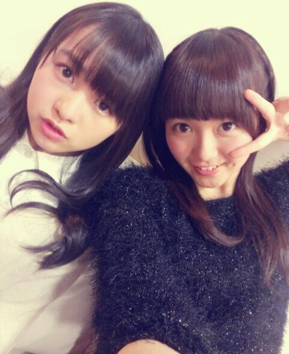
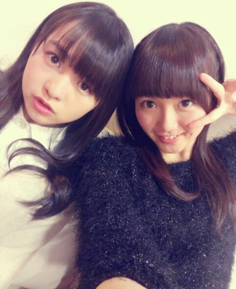
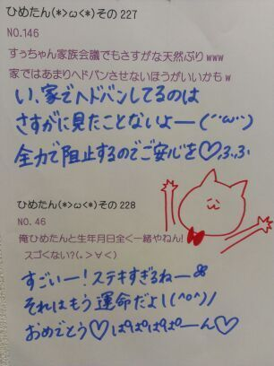

| 2013/01 21 Mon | ひめたん(*>ω<*)そ の256 |
なかいさんん！

黒のモフモフ着てたらみんなから
なんか珍しいーと言われましたが
確かにこれはひめたんの私服ではない！
でもねしゃーないの。
そゆこともたまにはあるんだから。
ねっ？
東京の雪は一週間も解けないんだねー
驚いた。
恐るべし東京。
最近の待ち受けは東京ミュウミュウ(ω)
改めて見たらめちゃ可愛くて///
みなさんの待ち受けはなんだろなー
てことで昨日は全員で
スチール撮影かーらーのレッスン！
たくさん衣装着て撮りましたー
画像解禁まで
ちょっと時間が空いちゃうだろうから
とりあ髪型はこんな感じって報告♪
編み込み × さらさらストレート
(//ω//)
てか思ったんだけど
今まで個握とか個人PVとかは
結構おろしてみたりもしたけど
スチール撮影の時は
ずっと結んでたのよね今まで！
だからストレートひめたんの写真は
初めましてかもよー？
レアだねレアだね＊
レッスンは5thの曲！
もう5th製作期間に入ったのかー
早いなー
そして頑張らねばなー。
こちらもあんまし言えないけど
結構好きな感じの曲ですー♪
あのーそしてね、
乃木どこ歌収録のエピソードを
ちょっと書きたいと思いまして＼(^^)／
なんてゆか、
ライブが終わるたびに思うことがあって
何度かブログにも書いたフレーズですが
ひめたんはほんとにほんとに
歌うことが好きで
パフォーマンスを披露することが
ほんとに幸せなんだ、と！
そしてみんなのパフォーマンスを
みることもまた好きです(ω)
だから乃木どこで
歌うことができて嬉しかった！
あんまし乃木坂出ることもないので
ひめきゅんさんには喜んでいただけたら
いただけたかなーと思います。
∩^ω^∩♪

黒のモフモフ着てたらみんなから
なんか珍しいーと言われましたが
確かにこれはひめたんの私服ではない！
でもねしゃーないの。
そゆこともたまにはあるんだから。
ねっ？
東京の雪は一週間も解けないんだねー
驚いた。
恐るべし東京。
最近の待ち受けは東京ミュウミュウ(ω)
改めて見たらめちゃ可愛くて///
みなさんの待ち受けはなんだろなー
てことで昨日は全員で
スチール撮影かーらーのレッスン！
たくさん衣装着て撮りましたー
画像解禁まで
ちょっと時間が空いちゃうだろうから
とりあ髪型はこんな感じって報告♪
編み込み × さらさらストレート
(//ω//)
てか思ったんだけど
今まで個握とか個人PVとかは
結構おろしてみたりもしたけど
スチール撮影の時は
ずっと結んでたのよね今まで！
だからストレートひめたんの写真は
初めましてかもよー？
レアだねレアだね＊
レッスンは5thの曲！
もう5th製作期間に入ったのかー
早いなー
そして頑張らねばなー。
こちらもあんまし言えないけど
結構好きな感じの曲ですー♪
あのーそしてね、
乃木どこ歌収録のエピソードを
ちょっと書きたいと思いまして＼(^^)／
なんてゆか、
ライブが終わるたびに思うことがあって
何度かブログにも書いたフレーズですが
ひめたんはほんとにほんとに
歌うことが好きで
パフォーマンスを披露することが
ほんとに幸せなんだ、と！
そしてみんなのパフォーマンスを
みることもまた好きです(ω)
だから乃木どこで
歌うことができて嬉しかった！
あんまし乃木坂出ることもないので
ひめきゅんさんには喜んでいただけたら
いただけたかなーと思います。
∩^ω^∩♪

 ひめたんが、ＬＯＶＥと聞いて何を連想する？
ひめたんが、ＬＯＶＥと聞いて何を連想する？
L・O・V・E・ラブリー・プッチモニ！
伝わるかしら///
ひめたんの乃木坂での曲をあげるとしたら何の曲？
狼に口笛を、春のメロディー
あたりかなあ...
えっと、勘です(*>ω<*)ふふっ
モダン焼き(おこのみ焼き) そば派 うどん派 おしえて~
そば(｀・ω・´)
そば以外は受け付けないぜよ！
広島人から言わしてもらうとモダン焼きってか、そばがあってのお好み焼きですよー
○○ガール、または女子とよく言われるけど、
ひめたんは何ガールが好きですか？
またはなりたいですか？
何ガールになろうかな。
なにがある、なにがーる、なにが...
ごめんなさい黙ります←
あ、今のひめたんキャベツガールだよ！
今までもらった誕生日プレゼントで一番印象に残ってるもの（こと）ってなんですか？
去年の誕生日は本当に嬉しかった！
ひめきゅんさんには生誕祭を盛大にひらいていただき、
メンバーからもお祝いしてもらって素敵な誕生日になりました(*・ω・*)
あとは、質問の答えから反れちゃうかもだけど、
今まで15回誕生日迎えた中で、4/13ひめたん上空は晴れる確率が高い！
なぜなら
ひめたんが晴れ女だからですどや。
 中元家の卵焼きの作り方を
中元家の卵焼きの作り方を
詳しく教えて！！
・材料
卵 2っ
砂糖、塩 適量
コンデンスミルク 1っ
ガムシロップ 1/2っ
チーズを入れても美味しいよー♪
・手順
卵を割りまーす
材料を全部混ぜまーす
フライパンに油を敷きまーす
弱火で焼きまーす
クルっと返すの頑張ってくださーい
完成でーす＼(^^)／

(＊´・ω・＊)ひめたん
コメント(206)
2013/01/21 23:42